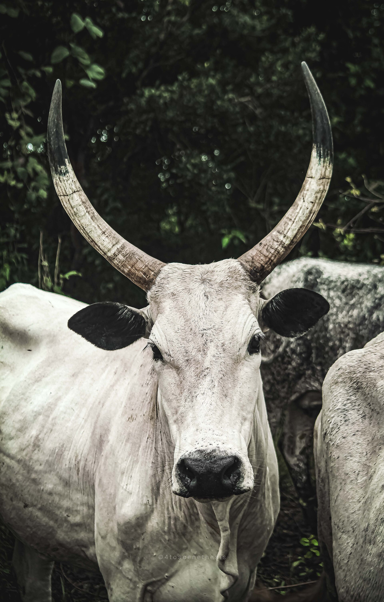

Dairy Farming
Fresh milk from well-managed herds — collected, cooled and processed under strict hygiene standards.
Overview
From Udder to Table
Our dairy unit keeps improved dairy and dual-purpose cattle, milked under hygienic conditions and chilled immediately in our cooling tanks. We aggregate milk from our own herd and partner Fulani dairy settlements, supplying processors, yoghurt makers and households.
- Hygienic milking parlour with cooling tanks
- Milk aggregation from pastoral partner herds
- Processing into yoghurt, cheese and butter at our plant

Dairy Range
What We Produce
Raw Milk
Chilled, filtered milk for processors.
Yoghurt & Fura
Fermented dairy products in packaged formats.
Butter & Cheese
Value-added dairy from our processing hub.
Partner With Our Dairy Chain
Processors, retailers and pastoralists — let's grow dairy together.